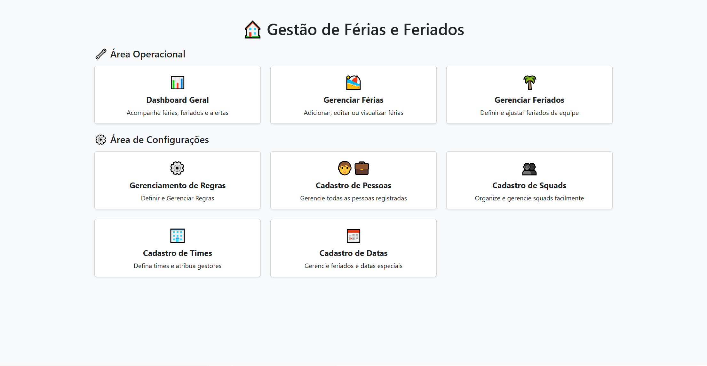
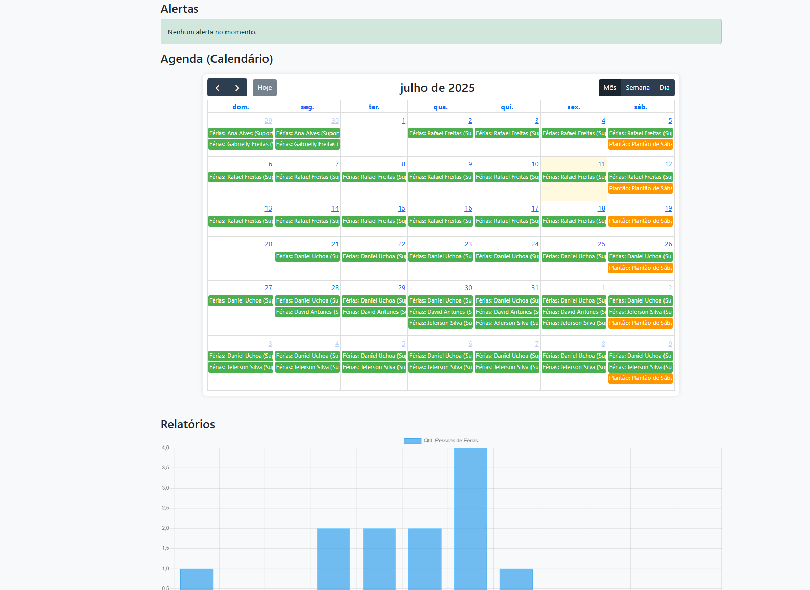
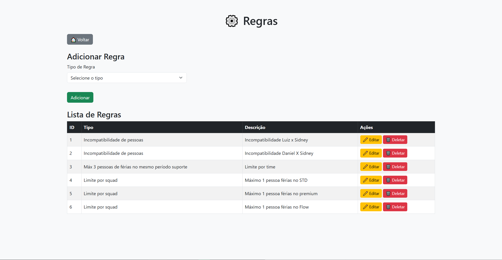
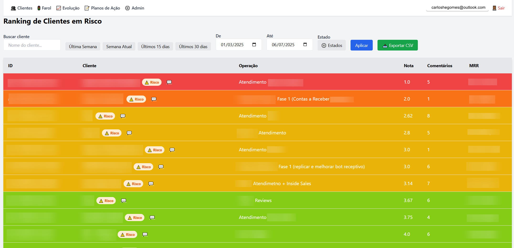
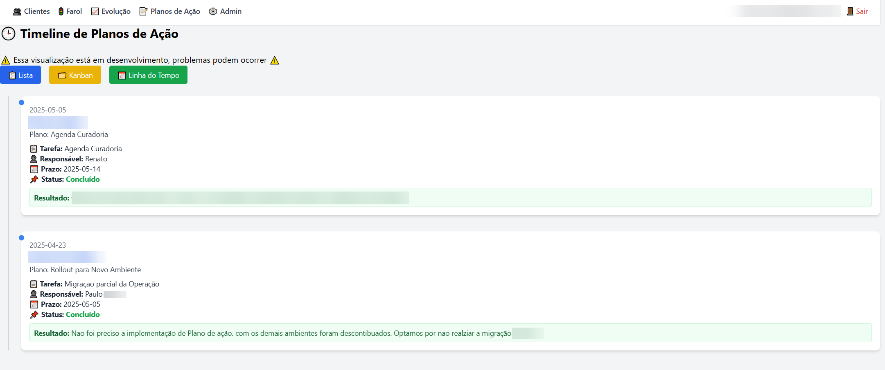
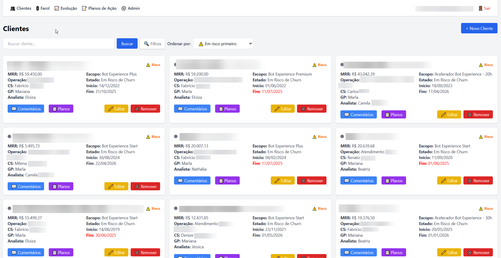
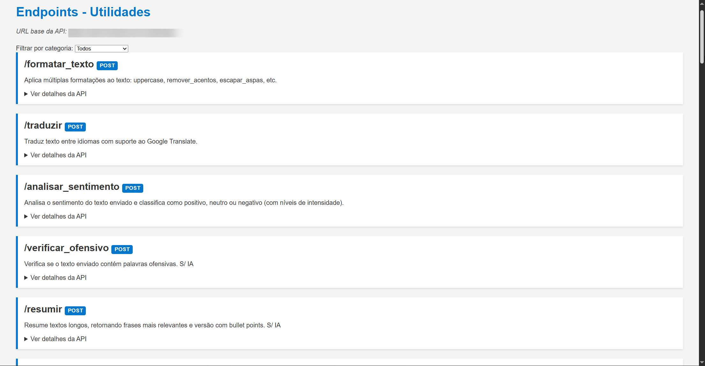

Profissional de TI | Integrações, IA e Automação
linkedin.com/in/carlos-he-gomes
Apaixonado por tecnologia, crio soluções práticas com IA e automação sem precisar programar. Utilizo IA Generativa e ferramentas digitais para transformar processos e gerar resultados reais para empresas.
Sistema de gestão de férias, folgas e regras operacionais para squads e times, incluindo dashboards analíticos.
  Ferramenta para gestão de clientes, incluindo farol de risco, timeline de planos de ação e comentários categorizados por sentimento.
  Conjunto de APIs para formatação de texto, cálculos, conversões e validações, utilizados em diversos projetos de automação e IA Generativa.
